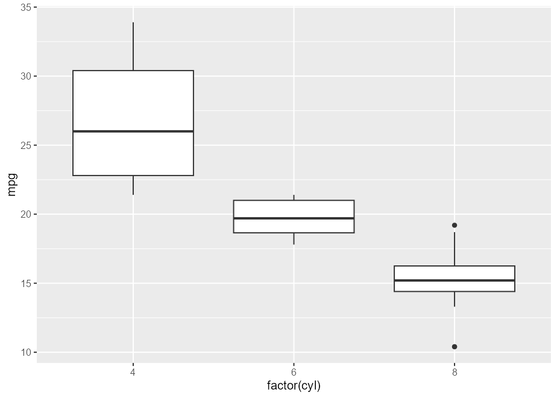

ggtrace
Installation
You can install the development version from GitHub with:
# install.packages("remotes")
remotes::install_github("yjunechoe/ggtrace")More on the üì¶ package website: https://yjunechoe.github.io/ggtrace
Description
ggtrace is a functional interface to ggplot2 internals. I do a better job of what that means, practically, in my talks:
Talk at JSM 2023 (pre-recorded) (+ accompanying paper)
Talk at rstudio::conf(2022) (+ accompanying materials).
Talk at useR! 2022 (+ accompanying materials).
You can read the full philosophy behind ggtrace in the Getting Started vignette. But broadly speaking, ggtrace was designed with three goals in mind, in order of increasing complexity:
-
To help users understand the design of sublayer modularity and write more expressive layer code using delayed aesthetic evaluation. This is a primarily pedagogical goal and outlined in my paper Sub-layer modularity in the Grammar of Graphics. The family of
layer_*()extractor functions return snapshots of layer data in the internals, to help scaffold a mental model of sublayer processes as a data wrangling pipeline.
-
To facilitate the user-developer transition, empowering experienced users of ggplot2 to start developing their own extension packages. This is achieved via a family of
inspect,capture, andhighjackworkflow functions, which provide a functional interface into the object-oriented design of the internals (the<ggproto>OOP).
To provide a pseudo-extension mechanism for ggplot2, by injecting custom code that highjacks the rendering pipeline. This is similar in spirit to
{gggrid}and{gginnards}, but with a broader scope (targeting any arbitrary computation) at some cost to reproducibility (may break with even trivial changes to the ggplot2 codebase). This is achieved via the low-level functionggtrace()(which improves uponbase::trace()) and its functional formwith_ggtrace(). See examples in the Overview vignette.
Example usage
library(ggplot2)
packageVersion("ggplot2")
#> [1] '3.5.2.9000'Note that ggtrace is routinely checked against the dev version of ggplot2.
1) Inspect sub-layer data
Example adopted from Demystifying delayed aesthetic evaluation
A bar plot of counts with geom_bar() with stat = "count" default:
State of bar layer’s data after the statistical transformation step:
layer_after_stat(bar_plot, verbose = TRUE)
#> ✔ Ran `inspect_return(bar_plot, ggplot2:::Layer$compute_statistic, layer_is(1L))`
#> # A tibble: 7 × 8
#> count prop x width flipped_aes fill PANEL group
#> <dbl> <dbl> <mppd_dsc> <dbl> <lgl> <chr> <fct> <int>
#> 1 5 1 1 0.9 FALSE 2seater 1 1
#> 2 47 1 2 0.9 FALSE compact 1 2
#> 3 41 1 3 0.9 FALSE midsize 1 3
#> 4 11 1 4 0.9 FALSE minivan 1 4
#> 5 33 1 5 0.9 FALSE pickup 1 5
#> 6 35 1 6 0.9 FALSE subcompact 1 6
#> 7 62 1 7 0.9 FALSE suv 1 7We can map aesthetics to variables from the after-stat data using after_stat():
bar_plot +
geom_text(
aes(label = after_stat(count)),
stat = "count",
position = position_nudge(y = 1), vjust = 0
)
Same idea with after_scale():
scatter_plot <- ggplot(mpg, aes(displ, hwy, fill = class)) +
scale_fill_viridis_d(option = "magma")
scatter_plot +
geom_point(shape = 21, size = 4, stroke = 1)
# `fill` column available for `after_scale(fill)`
layer_after_scale(scatter_plot, verbose = TRUE)
#> ✔ Ran `inspect_return(scatter_plot, ggplot2:::Layer$compute_geom_2, layer_is(1L))`
#> # A tibble: 234 × 5
#> x y fill PANEL group
#> <dbl> <dbl> <chr> <fct> <int>
#> 1 1.8 29 #2D1160FF 1 2
#> 2 1.8 29 #2D1160FF 1 2
#> 3 2 31 #2D1160FF 1 2
#> 4 2 30 #2D1160FF 1 2
#> 5 2.8 26 #2D1160FF 1 2
#> 6 2.8 26 #2D1160FF 1 2
#> 7 3.1 27 #2D1160FF 1 2
#> 8 1.8 26 #2D1160FF 1 2
#> 9 1.8 25 #2D1160FF 1 2
#> 10 2 28 #2D1160FF 1 2
#> # ℹ 224 more rows
scatter_plot +
geom_point(
aes(color = after_scale(prismatic::best_contrast(fill))),
shape = 21, size = 4, stroke = 1
)
2) Debug sublayer data
Example adopted from my rstudio::conf 2022 talk
Given a boxplot made with a geom_boxplot() layer, suppose that we want to add a second layer annotating the value of the upper whiskers:
box_p <- ggplot(data = mtcars) +
aes(x = factor(cyl), y = mpg) +
geom_boxplot()
box_p
A naive approach would be to add a layer that combines a boxplot stat with a label geom. But this errors out of the box:
box_p +
geom_label(stat = "boxplot")
#> Error in `geom_label()`:
#> ! Problem while setting up geom.
#> ℹ Error occurred in the 2nd layer.
#> Caused by error in `compute_geom_1()`:
#> ! `geom_label()` requires the following missing aesthetics: y and label.The error tells us that the geom is missing some missing aesthetics, so something must be wrong with the data that the geom receives. If we inspect this using layer_before_geom(), we find that the columns for y and label are indeed missing in the Before Geom data:
layer_before_geom(last_plot(), i = 2L, error = TRUE, verbose = TRUE)
#> ✔ Ran `inspect_args(last_plot(), ggplot2:::Layer$compute_geom_1, layer_is(2L), error = TRUE)$data`
#> # A tibble: 3 × 14
#> ymin lower middle upper ymax outliers notchupper notchlower x width
#> <dbl> <dbl> <dbl> <dbl> <dbl> <list> <dbl> <dbl> <dbl> <dbl>
#> 1 21.4 22.8 26 30.4 33.9 <dbl [0]> 29.6 22.4 1 0.75
#> 2 17.8 18.6 19.7 21 21.4 <dbl [0]> 21.1 18.3 2 0.75
#> 3 13.3 14.4 15.2 16.2 18.7 <dbl [3]> 16.0 14.4 3 0.75
#> # ℹ 4 more variables: relvarwidth <dbl>, flipped_aes <lgl>, PANEL <fct>,
#> # group <int>Note that you can more conveniently call last_layer_errorcontext() to the same effect:
last_layer_errorcontext()
#> ✔ Ran `inspect_args(last_plot(), ggplot2:::Layer$compute_geom_1, layer_is(2L), error = TRUE)$data`
#> # A tibble: 3 × 14
#> ymin lower middle upper ymax outliers notchupper notchlower x width
#> <dbl> <dbl> <dbl> <dbl> <dbl> <list> <dbl> <dbl> <dbl> <dbl>
#> 1 21.4 22.8 26 30.4 33.9 <dbl [0]> 29.6 22.4 1 0.75
#> 2 17.8 18.6 19.7 21 21.4 <dbl [0]> 21.1 18.3 2 0.75
#> 3 13.3 14.4 15.2 16.2 18.7 <dbl [3]> 16.0 14.4 3 0.75
#> # ℹ 4 more variables: relvarwidth <dbl>, flipped_aes <lgl>, PANEL <fct>,
#> # group <int>Thus, we need to ensure that y exists to satisfy both the stat and the geom, and that label exists after the statistical transformation step but before the geom sees the data. Crucially, we use the computed variable ymax to (re-)map to the y and label aesthetics.
box_p +
geom_label(
aes(y = stage(mpg, after_stat = ymax),
label = after_stat(ymax)),
stat = "boxplot"
)Inspecting the after-stat snapshot of the successful plot above, we see that both y and label are now present at this stage to later satisfy the geom.
layer_before_geom(last_plot(), i = 2L)[, c("y", "ymax", "label")]
#> # A tibble: 3 × 3
#> y ymax label
#> <dbl> <dbl> <dbl>
#> 1 33.9 33.9 33.9
#> 2 21.4 21.4 21.4
#> 3 18.7 18.7 18.73) Highjack ggproto (remove boxplot outliers)
Example inspired by https://github.com/tidyverse/ggplot2/issues/4892.
You can hide outliers in geom_boxplot() using the outlier. argument(s), but they’ll still be present in the layer’s underlying dataframe representation. Note how this method adds empty space around the boxplot:
boxplot_plot <- ggplot(mpg, aes(hwy, class)) +
geom_boxplot(outlier.shape = NA)
boxplot_plot
This is because the scales are re-trained after the calculation of the boxplot statistics. In other words, the “final” min/max value of the x-scale are derived from the calculated outliers, even if they’re not drawn.
layer_data(boxplot_plot)[, c("xmin", "xmax", "outliers", "xmin_final", "xmax_final")]
#> xmin xmax outliers xmin_final xmax_final
#> 1 23 26 23 26
#> 2 23 33 35, 37, 35, 44 23 44
#> 3 23 32 23 32
#> 4 21 24 17 17 24
#> 5 15 20 12, 12, 12, 22 12 22
#> 6 20 36 44, 41 20 44
#> 7 14 22 12, 12, 25, 24, 27, 25, 26, 23 12 27One solution is to highjack the calculation of the boxplot layer’s statistics such that values of the outliers column is set to NULL. Using highjack_return(), we can pass an expression that modifies returnValue() to the value argument, which evaluates to the value about to be returned by the method.
highjack_return(
x = boxplot_plot,
method = Stat$compute_layer,
cond = 1L,
value = quote({
transform(returnValue(), outliers = NULL)
})
)
It’s interesting to note that this is also possible in “vanilla” ggplot. Following our earlier discussion of after_stat():
# NOTE: outdated solution - now possible via `outliers = FALSE` in ggplot v3.5.0
# Suppress warning from mapping to `outliers` aesthetic
update_geom_defaults("boxplot", list(outliers = NULL))
ggplot(mpg, aes(hwy, class)) +
geom_boxplot(
# Equivalent effect of modifying the after-stat data
aes(outliers = after_stat(list(NULL)))
)
4) Not just ggproto
Example adopted from Github issue #97
The method argument of workflow functions can be (almost) any function-like object called during the rendering of a ggplot.
set.seed(2023)
# Example from `?stat_summary`
summary_plot <- ggplot(mtcars, aes(mpg, factor(cyl))) +
geom_point() +
stat_summary(fun.data = "mean_cl_boot", colour = "red", linewidth = 2, size = 3)
summary_plot
inspect_args(x = summary_plot, method = mean_cl_boot)
#> $x
#> [1] 22.8 24.4 22.8 32.4 30.4 33.9 21.5 27.3 26.0 30.4 21.4
inspect_return(x = summary_plot, method = mean_cl_boot)
#> y ymin ymax
#> 1 26.66364 24.11727 29.19159
highjack_return(
x = summary_plot, method = mean_cl_boot,
value = quote({
data.frame(y = 50, ymin = 25, ymax = 75)
})
)
5) Visually crop polar plots
Example adopted from a twitter thread
Here’s a plot in polar coordinates:
polar_plot <- ggplot(mtcars, aes(hp, mpg)) +
geom_point() +
geom_smooth(method = "lm", formula = y ~ x) +
expand_limits(y = c(0, 60)) +
coord_polar(start = 0, theta = "y")
polar_plot
We can clip the plot panel by highjacking the Layout$render() method using the generic workflow function with_ggtrace():
with_ggtrace(
x = polar_plot + theme(aspect.ratio = 1/.48),
method = Layout$render,
trace_steps = 5L,
trace_expr = quote({
panels[[1]] <- editGrob(panels[[1]], vp = viewport(xscale = c(.48, 1)))
}),
out = "g"
)
See implementation in MSBMisc::crop_coord_polar().
6) Highjack the internal data pipeline
Example inspired by a stackoverflow question:

Intercepting the data at draw step to subset bars arbitrarily:
bars_subset <- highjack_args(
x = bars, method = Geom$draw_layer, cond = 1L,
values = expression(
data = data[c(2, 4, 6, 8, 11),]
)
)
bars_subset
7) Highjack the internal drawing context
Example adopted from my useR! 2022 talk:
library(palmerpenguins)
flashy_plot <- na.omit(palmerpenguins::penguins) |>
ggplot(aes(x = species, y = flipper_length_mm)) +
geom_boxplot(aes(fill = species), width = .7) +
facet_wrap(~ year)
flashy_plot
highjack_return(
flashy_plot, Geom$draw_panel, cond = TRUE,
value = quote({
circ <- circleGrob(y = .25 * ._counter_)
grobTree( editGrob(circ, gp = gpar(fill = linearGradient())),
editGrob(returnValue(), vp = viewport(clip = circ)) )
}))
Note the use of the special variable ._counter_, which increments every time a function/method has been called. See the tracing context topic for more details.